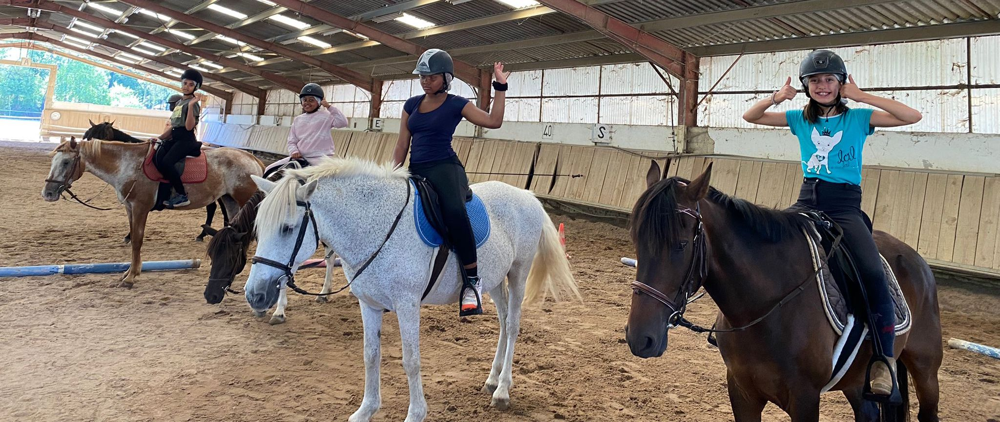
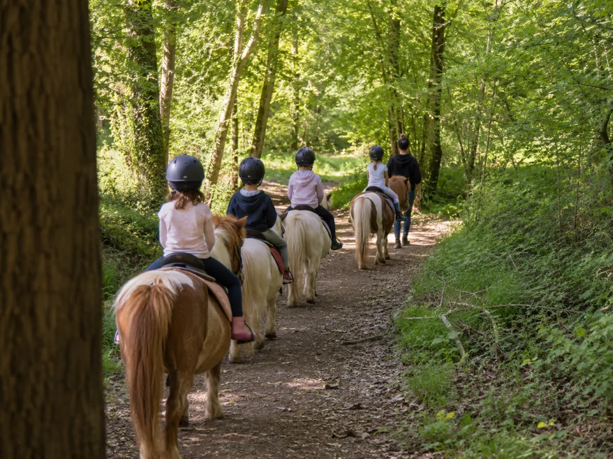
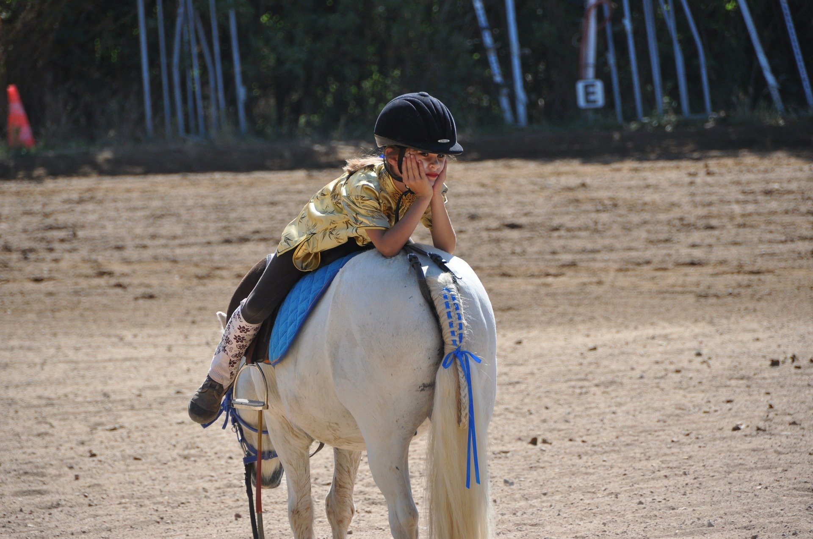
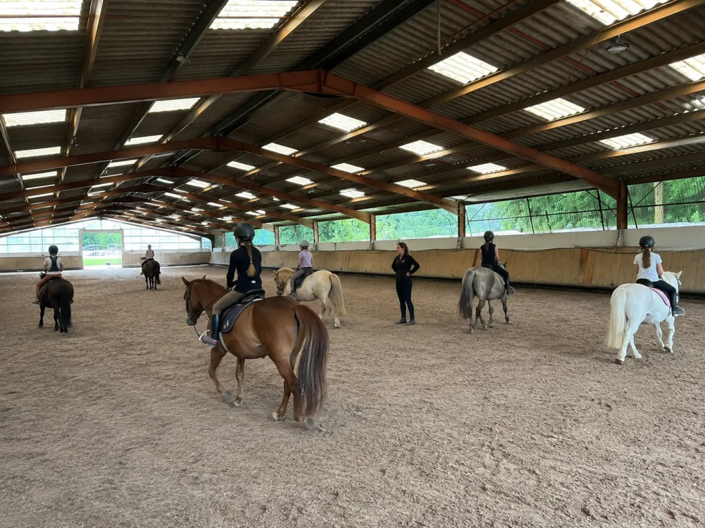
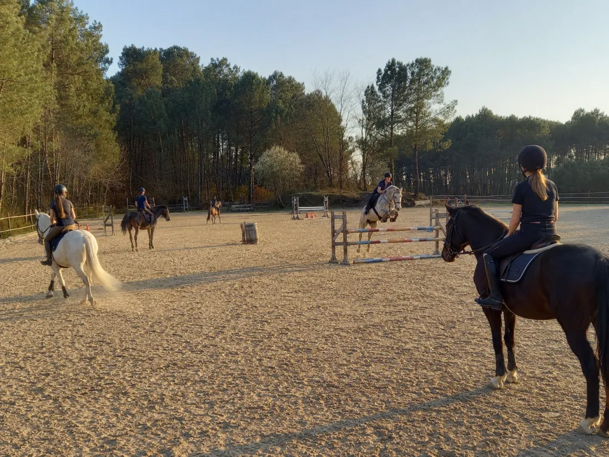
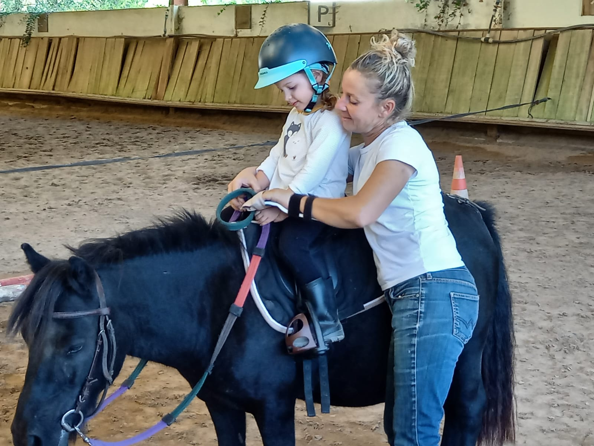
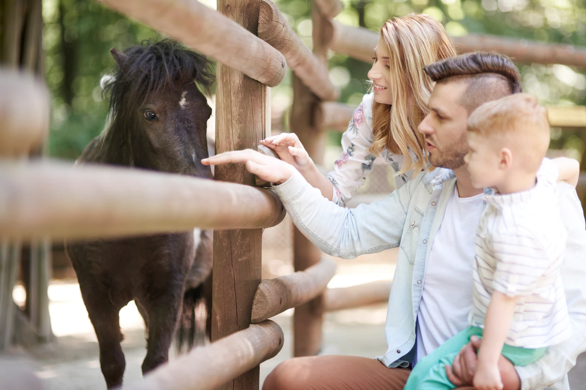
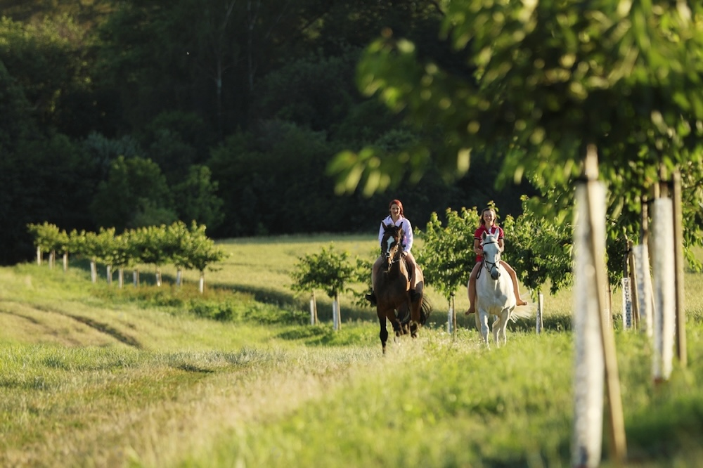
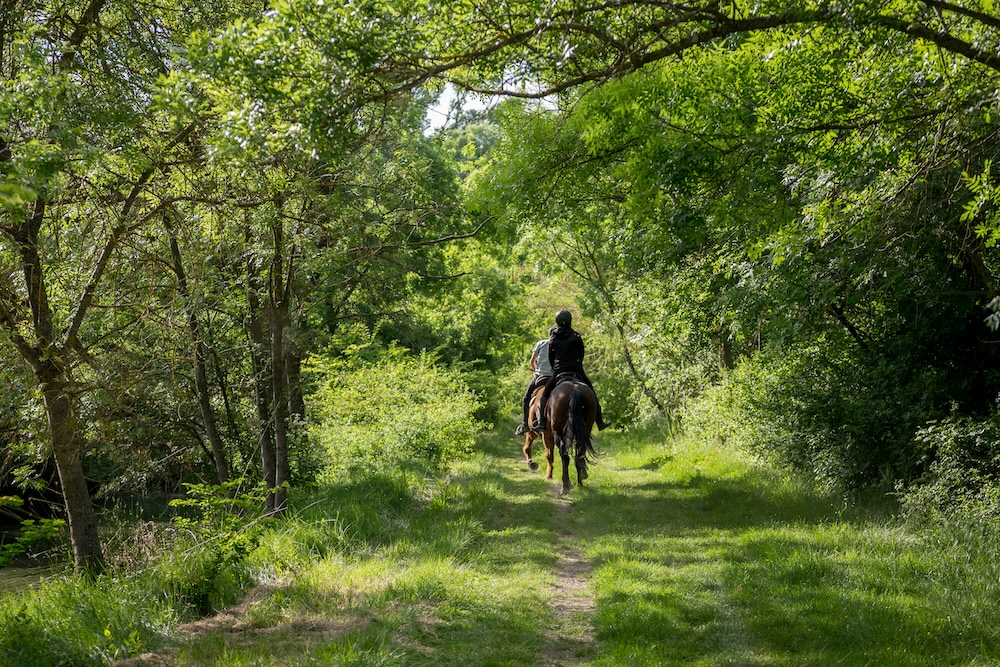
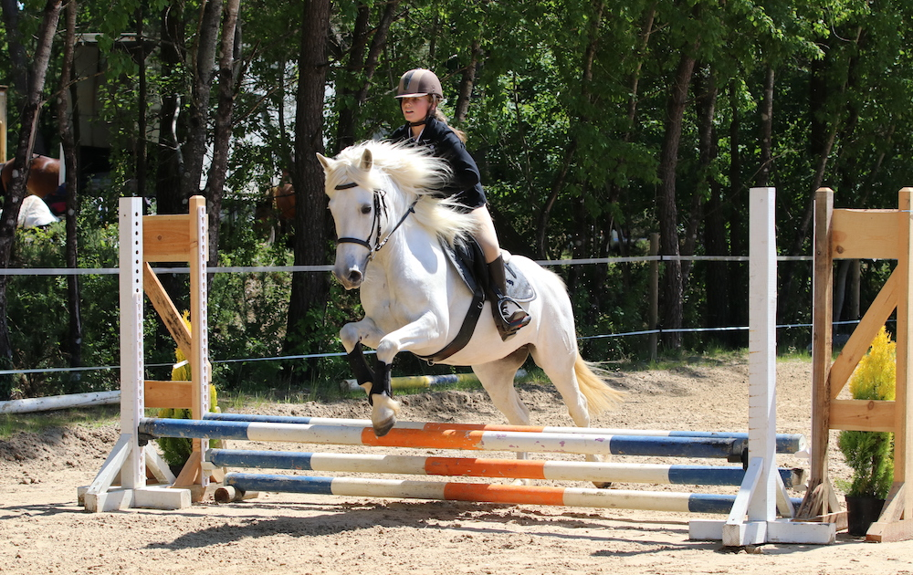

Du baby poney au galop 7, une école pour les enfants où l'on apprend l'équitation au plus près du poney, dans le respect et le plaisir.
Une progression continue de la première mise en selle au cavalier qui sort en concours.

Pansage, jeux à pied, premières mises en selle. Une demi-heure pour s'apprivoiser, à son rythme.

Cours d'une heure en groupe par niveau. Les bases de l'équitation à poney, en sécurité et en plaisir.

Préparation et passage des galops fédéraux. Travail sur le plat, à l'obstacle et théorie.

Perfectionnement et sortie en compétition pour les cavaliers motivés.

Une équipe de moniteurs formés, des poneys sélectionnés pour leur caractère et leur taille. Pour que chaque cours soit un moment d'apprentissage autant qu'un moment de joie.
Rencontrer l'équipeDès 3 ans en formule baby poney : une demi-heure adaptée, autour du pansage, des jeux à pied et de la mise en selle. Le vrai cours d'équitation démarre vers 6-7 ans, en groupe d'une heure.
Non. Le club fournit casque et matériel pour les premiers cours. Pour la suite, un casque personnel et des bottines de cuir souple sont conseillés.
Une séance d'essai vous est proposée pour rencontrer les poneys, les moniteurs et l'équipe. Contactez-nous par téléphone au 06 81 07 84 53 ou par mail pour fixer un rendez-vous.




Une séance d'essai pour rencontrer les poneys, les moniteurs et l'équipe.
Le poney club accueille chaque semaine des enfants de Bergerac et des communes voisines — Prigonrieux, Lembras, Creysse, La Force, Lamonzie-Saint-Martin — ainsi que de Mussidan, Villamblard ou Vergt, un peu plus au nord. Le grand parking devant les écuries facilite la dépose et la récupération les mercredis et pendant les vacances ; pensez à dépasser le manoir d'une cinquantaine de mètres, l'entrée est juste après.